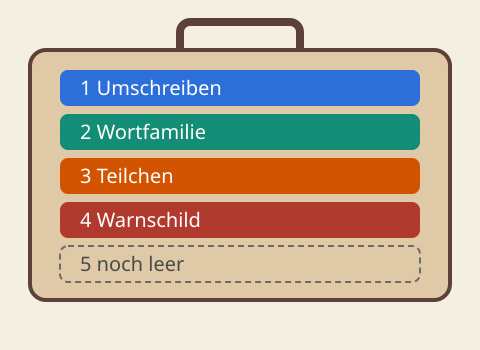

Werkzeug 4: Das Warnschild für false friends
Mit einem KI-Tutor lernen
Ein KI-Tutor erklärt dir diese Seite und hilft dir bei den Aufgaben. Wähl deinen Assistenten:
Mit Claude öffnen Mit ChatGPT öffnen Mit Mistral Vibe öffnen
Du nutzt dein eigenes Konto beim Anbieter. Der Assistent ist kein Angebot von lernapps.net: lernapps liefert nur Inhalte und Aufgaben. Die Wahl gilt für alle Seiten, nur auf diesem Gerät.
Eine Mail mit Übersetzungsfehlern
Ein Café hat seine Mail an die Gäste mit einem Übersetzungsprogramm ins Englische übersetzt. Sophie prüft den Text. Unter jedem deutschen Satz steht, was das Programm daraus gemacht hat. Das kannst du danach: Du erkennst Wörter, die wie deutsche aussehen und etwas anderes bedeuten, und benutzt das richtige englische Wort.
(1) Original: Ab Montag bekommen Sie zu jedem Kuchen einen Kaffee gratis.
Programm: From Monday you become a free coffee with every cake.
(2) Original: Der Chef des Cafés begrüßt Sie persönlich.
Programm: The chef of the café greets you personally.
(3) Original: Unsere Bedienung ist sehr sensibel.
Programm: Our waiter is very sensible.
(4) Original: Für unsere Stammgäste gibt es ein kleines Geschenk.
Programm: There is a small gift for our regular guests.
(5) Original: Sie bekommen die neue Karte eventuell schon heute.
Programm: You will eventually get the new menu today.
Aufgabe
Lösung
Zeile (1)
become heißt nicht bekommen. Das Programm hat wohl Wort für Wort übersetzt.
Zeile (4) richtige Antwort
gift heißt Geschenk. Hier passt das Wort.
Zeile (5)
eventually heißt nicht eventuell. Das Programm hat den Sinn des Satzes verändert.
In Zeile (4) passt das Wort. In den Zeilen (1) und (5) ändert es den Sinn.
Die Werkzeugkarte Warnschild

© CC-BY-4.0Der Koffer hat jetzt vier Werkzeuge.
| Schritt | Was du tust | Beispiel |
|---|---|---|
| 1 | Halte an, wenn ein englisches Wort wie ein deutsches aussieht. Das ist das Warnschild. | art sieht aus wie Art |
| 2 | Frage, ob die deutsche Bedeutung in den Satz passt. | art heißt Kunst, nicht Art |
| 3 | Prüfe im Wörterbuch und merke dir das Paar. | art ≠ Art |
| Englisch | Beispiel · Hinweis | Deutsch |
|---|---|---|
| become | Falscher Freund: nicht bekommen (das ist get oder receive) | werden |
| chef | Falscher Freund: nicht Chef (das ist boss) | der Koch (cook) |
| sensible | Falscher Freund: nicht sensibel (das ist sensitive) | vernünftig |
| eventually | Falscher Freund: nicht eventuell (das ist maybe oder possibly) | schließlich, am Ende |
| actual | Falscher Freund: nicht aktuell (das ist current) | tatsächlich |
| gift | Falscher Freund: nicht Gift (das ist poison) | das Geschenk |
Merke
Ein false friend ist ein Wort, das einem Wort in einer anderen Sprache ähnelt und etwas anderes bedeutet. Der Begriff wurde durch ein französisches Buch von 1928 eingeführt (Les Faux Amis).
Übung
Aufgabe
Wähle das richtige englische Wort.
Tipp
Prüfe, welche deutsche Bedeutung in den Satz passt.
- Das ist mein aktueller Plan. → This is my … plan.
- Das ist die tatsächliche Zahl. → This is the … number.
Lösung
- This is my current plan.
- This is the actual number.
Aufgabe
Schreibe den Satz auf Englisch.
Tipp
Frage dich, ob das ähnliche Wort wirklich dasselbe bedeutet.
- Ich bekomme morgen einen Brief.
- Mein Vater ist Chef eines kleinen Ladens.
- Vielleicht komme ich später.
Lösung
- I'm getting a letter tomorrow. (auch richtig: I am getting a letter tomorrow.; I'll get a letter tomorrow.; I will get a letter tomorrow.; I'm going to get a letter tomorrow.; I am going to get a letter tomorrow.; I'll receive a letter tomorrow.; I will receive a letter tomorrow.; I'm going to receive a letter tomorrow.; I'm receiving a letter tomorrow.; I am receiving a letter tomorrow.)
- My father is the boss of a small shop. (auch richtig: My father is the owner of a small shop.; My father is the manager of a small shop.)
- Maybe I'll come later. (auch richtig: Maybe I will come later.; Maybe I'm coming later.; Maybe I am coming later.; Perhaps I'll come later.; Perhaps I will come later.; Possibly I'll come later.; Possibly I will come later.; I may come later.; I might come later.)
Aufgabe
Lösung
The dog ate gift.
gift heißt Geschenk, nicht Gift.
The dog ate a gift.
a gift ist ein Geschenk. Der Satz sagt etwas anderes.
The dog ate poison. richtige Antwort
poison heißt Gift.
Das deutsche Gift heißt auf Englisch poison. Das englische gift ist ein Geschenk.
Aufgabe
Lösung
Richtige Antwort: Die Aussage stimmt nicht.
sensible heißt vernünftig. Für sensibel sagst du sensitive.
Selbst entscheiden
Offene Aufgabe
Soll das Café die Übersetzung so verschicken? Entscheide dich und begründe es in zwei bis vier Sätzen auf Deutsch. Nenne mindestens zwei Zeilen und sage, was dort richtig wäre.
Eine gute Antwort enthält:
Lösung
Nein, die Mail sollte so nicht verschickt werden. In Zeile (1) steht become, aber gemeint ist bekommen. Dort gehört get hin. In Zeile (3) steht sensible, das heißt vernünftig. Gemeint ist sensitive.
Wie es weitergeht
Das vierte Werkzeug liegt im Koffer. Auf der letzten Seite stellst du eigene Regeln auf, wie sich Englisch und Deutsch unterscheiden.
Fehler gefunden oder eine Idee für diese App?